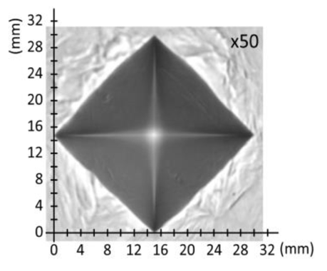

1.
En un ensayo Brinell con una bola de 2,5 mm de diámetro se ha obtenido un diámetro de huella de 1,5 mm. Si la constante de ensayo es 30, determinar:
La carga aplicada en el ensayo.
El valor de la dureza del material.
La carga se fija mediante kgf. La superficie del casquete es y la dureza resulta La huella no cumple : es falso.
1. a) kgf; b) kgf/mm². Huella no válida por tamaño.
2.
Sobre un acero se ha realizado un ensayo Brinell utilizando una bola de 10 mm de diámetro y una carga de 3000 kgf, obteniéndose un valor de 150 HB.
Calcular el diámetro de la huella.
Si la carga empleada fuera de 187,5 kgf, ¿qué diámetro de bola habría que utilizar?
De y : Para acero, y ; por tanto mm. La primera huella cumple mm.
2. a) mm (válida); b) mm.
3.
En un ensayo de dureza realizado a un material por el método Brinell, se obtuvo un valor de 40 HB. Se desea saber:
La carga que se ha aplicado en el ensayo si se ha utilizado como penetrador una bola de 5 mm de diámetro y la huella producida fue de 1,2 mm de diámetro.
¿Cuál fue la constante de ensayo del material?
Cite otro método de medida de dureza en materiales y explique cómo se determina su valor.
La huella tiene mm². Luego kgf y kgf/mm². La huella no alcanza mm, por lo que no cumple el intervalo de validez. En Vickers se presiona una pirámide de diamante y se calcula con la media de las dos diagonales.
3. a) kgf; b) kgf/mm²; c) método Vickers. Huella Brinell no válida por tamaño.
4.
Se ha medido la dureza en la superficie y en el núcleo de un engranaje de acero. Los resultados fueron 500 HB y 200 HB, respectivamente.
Suponer que la bola utilizada en el ensayo Brinell fue de 2,5 mm de diámetro y la constante de ensayo 30. Calcular el diámetro de la huella obtenido al alcanzar 500 HB.
Suponiendo que al hacer un ensayo Vickers con 100 kgf de carga el valor de la dureza obtenida sea el mismo que en el ensayo Brinell, calcular la diagonal de la huella dejada.
Explique, en función de su aplicación posterior, qué se persigue con la obtención de diferentes durezas en la pieza fabricada.
kgf. Despejando la huella Brinell se obtiene mm, dentro de mm. Para Vickers, mm. Una superficie más dura resiste desgaste y contacto; un núcleo menos duro conserva tenacidad y reduce el riesgo de rotura frágil.
4. a) mm; b) mm; c) superficie resistente al desgaste y núcleo tenaz.
5.
Para determinar la dureza Brinell de un material se ha utilizado una bola de 5 mm de diámetro y se ha elegido una constante K = 30. La huella obtenida en el ensayo ha sido de 2,3 mm de diámetro. Se pide:
Calcular la dureza Brinell del material.
Calcular la profundidad de la huella.
Explicar las diferencias entre un ensayo Brinell y otro Rockwell.
kgf. Entonces kgf/mm² y mm. La huella cumple mm. Brinell mide ópticamente el diámetro de una huella esférica; Rockwell mide directamente profundidad residual bajo precarga y carga mayor, con penetrador y constantes propios de cada escala. Rockwell se considera ampliación, sin cálculo exigible en PAU 2025-26.
5. a) kgf/mm²; b) mm; c) Brinell mide diámetro y Rockwell profundidad (ampliación).
6.
Una pieza de una determinada aleación se somete a un ensayo de dureza utilizando una carga de 1000 kgf aplicada durante 30 segundos. Tras el ensayo, se mide la huella y resulta ser un casquete esférico de 3 mm de diámetro y 7,23 mm² de superficie. Calcular:
La dureza del material.
El diámetro de la bola utilizada, sabiendo que el ensayo puede considerarse válido.
Expresar correctamente la dureza del material, explicando cada uno de los términos.
Comprobar la validez del ensayo desde el punto de vista de las medidas de la huella obtenida.
kgf/mm². Al imponer con mm se obtiene mm; la diferencia respecto de la bola nominal de 10 mm procede del redondeo de a dos decimales. La huella es válida. La fuente no identifica el material de la bola; por ello la designación, con diámetro nominal, es 138 HBS/HBW 10/1000/30, eligiendo HBS si fue acero o HBW si fue carburo de tungsteno. Los campos son dureza, penetrador, diámetro/carga y tiempo.
6. a) kgf/mm²; b) mm (≈ 10 mm nominales); c) 138 HBS/HBW 10/1000/30 según el material de la bola; d) válida.
7.
Sobre un acero se ha realizado un ensayo Brinell utilizando una bola de 10 mm de diámetro y una carga de 3000 kgf, obteniéndose un valor de 125. Se pide:
Describir cómo debe realizarse el ensayo.
Calcular el diámetro de la huella.
Si la carga empleada hubiera sido 187,5 kgf, ¿qué otro cambio tendría que haberse hecho?
Se prepara una superficie plana, se aplica perpendicularmente la bola con la carga fijada durante el tiempo prescrito y se promedian dos diámetros de huella antes de calcular HB. El despeje da mm; como supera mm, la combinación no cumple la validez geométrica. Manteniendo , con kgf corresponde mm.
7. a) ensayo Brinell con medición de dos diámetros; b) mm (no válida); c) bola de mm.
8.
En relación con el ensayo Vickers:
Dibujar un esquema representativo del ensayo Vickers, situando en él una carga de 1000 N. Dibujar la huella obtenida y suponer que dicha huella mide 250 × 10³ µm².
Explique para qué sirve este ensayo.
Exprese el resultado del ensayo.
El esquema debe mostrar la pirámide de diamante de base cuadrada, la carga normal y la huella con sus dos diagonales. N equivalen a kgf y µm² equivalen a mm². Interpretando el dato como superficie de huella, kgf/mm² y la diagonal equivalente es mm. Vickers sirve para durezas macro y micro con un único penetrador.
8. a) esquema de pirámide y huella cuadrada; b) medida de dureza Vickers; c) 408 HV 102 (área interpretada como 250 000 µm²).
9.
En un ensayo Brinell se ha aplicado una carga de 3000 kgf. El diámetro de la bola del penetrador es 10 mm. El diámetro de huella obtenido es de 4,5 mm y el tiempo de aplicación 15 s. Se pide:
El valor de la dureza Brinell y su expresión normalizada.
Indicar la carga que habría que aplicar a una probeta del mismo material si se quiere reducir la dimensión de la bola del penetrador a 5 mm.
Indicar el tamaño de la huella cuando el penetrador sea de 5 mm de diámetro y el valor de la dureza el mismo que en el apartado a).
kgf/mm². La huella es válida. Como , para mm se aplica kgf. Al conservar y HB, la geometría es semejante: mm, también válida. La bola no está identificada; la norma exige elegir HBS o HBW.
9. a) kgf/mm², 179 HBS/HBW 10/3000 según penetrador; b) kgf; c) mm.
10.
Se desea medir la dureza Brinell de una probeta de acero y de otra de aluminio, cuyas constantes de ensayo son 30 y 5 respectivamente. Se dispone únicamente de penetradores de 5 y 2,5 mm de diámetro y el durómetro solo puede cargarse con 125, 187,5 o 250 kgf.
Para el acero: ¿qué carga y qué penetrador se podrían utilizar? Razonar, con los cálculos correspondientes, si es posible utilizar los dos penetradores.
Responder a las mismas cuestiones para la pieza de aluminio.
Se usa . Acero: con mm harían falta kgf, no disponibles; con mm hacen falta kgf, sí disponibles. Aluminio: con mm hacen falta kgf, disponibles; con mm serían kgf, no disponibles.
10. a) acero: bola de 2,5 mm y 187,5 kgf; b) aluminio: bola de 5 mm y 125 kgf.
11.
Sobre un acero se ha realizado un ensayo Brinell utilizando una bola de 10 mm de diámetro y una carga de 3000 kgf, obteniéndose un valor de 200 HB. Se pide:
Calcular el diámetro de la huella.
Si la carga empleada hubiera sido 250 kgf, ¿qué otro cambio tendría que haberse hecho?
mm, dentro de . Para conservar , mm.
11. a) mm; b) bola de mm.
12.
Una pieza se somete a un ensayo Brinell con constante de proporcionalidad K = 30 y bola de 5 mm de diámetro. La huella producida tiene un diámetro de 1,8 mm. Calcular:
La carga aplicada.
La dureza Brinell.
kgf. Sustituyendo en Brinell, kgf/mm². La huella cumple mm.
12. a) kgf; b) kgf/mm².
13.
Sobre una pieza de bronce se ha realizado un ensayo Brinell, utilizando una bola de 10 mm de diámetro y una carga de 1000 kgf, obteniéndose un valor de 150.
Calcular el diámetro de la huella.
Si la carga empleada hubiera sido 250 kgf, ¿qué otro cambio tendría que haberse realizado?
El despeje de Brinell da mm, válido. En bronce se usa ; con kgf corresponde mm.
13. a) mm; b) bola de mm.
14.
En un ensayo de dureza, utilizando una bola de 10 mm de diámetro y una carga de 3000 kgf durante 30 s, se obtiene un valor de 125 HB. Calcular:
El diámetro de la huella.
¿Se realizó correctamente el ensayo? ¿Cuál es la expresión normalizada del resultado? Explícalo brevemente.
mm. Como mm, el ensayo no cumple la condición geométrica. Al durar 30 s, el tiempo debe figurar. La fuente no declara el material de la bola: 125 HBS/HBW 10/3000/30, escogiendo HBS o HBW según corresponda.
14. a) mm; b) ensayo no válido; 125 HBS/HBW 10/3000/30 según penetrador.
15.
En un ensayo de dureza realizado a un material por el método Brinell, se obtuvo un valor de 40 HB. Se desea saber:
La carga que se ha aplicado en el ensayo si se ha utilizado como penetrador una bola de 5 mm de diámetro y la huella producida fue de 1,95 mm de diámetro.
¿Cuál es la constante del ensayo del material?
mm². Por tanto kgf y kgf/mm². La huella es válida.
15. a) kgf; b) kgf/mm².
16.
En un ensayo Brinell se ha utilizado una bola de 5 mm de diámetro y una constante K = 30, obteniéndose una huella de 2 mm de diámetro. Se pide:
Calcular la dureza Brinell del material.
Calcular la profundidad de la huella.
kgf. Así, kgf/mm² y mm. La huella es válida.
16. a) kgf/mm²; b) mm.
17.
En un ensayo de dureza Brinell se ha utilizado una bola de 10 mm de diámetro. Durante el ensayo se ha elegido una K = 10 y se ha obtenido una huella de 2,5 mm de diámetro. Se pide:
Calcular la dureza del material.
Calcular el diámetro de la huella producida si al usar una bola de igual diámetro se obtiene una dureza de 300 HB al aplicar una carga de 500 kgf.
En el primer caso kgf y kgf/mm²; mm está justo en el límite inferior válido. En el segundo, mm, menor que mm y por tanto no válido geométricamente.
17. a) kgf/mm²; b) mm (no válida).
18.
El resultado de un ensayo de dureza es 630 HV 50. Se pide:
Calcular la diagonal de la huella.
Calcular el valor de la dureza si se ha realizado el mismo ensayo en otro material, utilizando una carga de 20 kgf, y la diagonal de la huella obtenida es de 0,5 mm.
De , mm. Para el segundo material, kgf/mm².
18. a) mm; b) kgf/mm².
19.
A un metal se le realiza un ensayo de dureza Vickers aplicando al penetrador una carga de 120 kgf, obteniéndose una huella de 1,125 mm de diagonal. Se pide:
La dureza del material.
El valor de la diagonal obtenida si se utilizara una carga de 60 kgf.
Realizar un esquema del ensayo.
kgf/mm². Para el mismo material con 60 kgf, mm. El esquema debe representar la pirámide de diamante, la fuerza normal y la huella cuadrada con dos diagonales cuya media es .
19. a) kgf/mm²; b) mm; c) esquema Vickers rotulado.
20.
Tras un ensayo de dureza Vickers se midió la diagonal de la huella, obteniéndose un valor de 0,63 mm. La dureza medida fue de 140 kgf/mm². Se pide:
La carga, en newtons, utilizada en el ensayo.
La diagonal de la huella para una probeta del mismo material si la carga aplicada fuese de 50 kgf.
kgf, que equivale a N. Con 50 kgf, mm.
20. a) N; b) mm.
21.
En un ensayo Vickers en el que la carga se aplicó durante 15 s se obtuvo una huella de 0,6 mm de diagonal, siendo la dureza obtenida 247 kgf/mm². Se pide:
Calcular la carga en kN que se aplicó.
Calcular la dureza HV de otro material distinto al aplicar la misma carga si la diagonal de la huella obtenida fue de 0,45 mm.
Expresar la dureza del apartado a) según la norma y explicar el significado de cada término.
kgf kN. En el segundo material, kgf/mm². La designación es 247 HV 48: valor de dureza, método Vickers y carga nominal; 15 s está dentro de 10–15 s y no se añade.
21. a) kN; b) kgf/mm²; c) 247 HV 48.
22.
El resultado de un ensayo de dureza Vickers es de 685 kgf/mm². La carga aplicada ha sido de 132 kgf. Se pide:
La superficie de la huella producida en el ensayo.
La diagonal de la huella.
Como , mm². Además, mm.
22. a) mm²; b) mm.
23.
En un ensayo de dureza Brinell se utiliza una bola de 1 cm de diámetro y una carga de 3000 kgf. El diámetro de la huella producida es de 3,5 mm. Se pide:
La dureza Brinell del material.
La constante de ensayo utilizada.
cm mm. kgf/mm² y kgf/mm². La huella es válida.
23. a) kgf/mm²; b) kgf/mm².
24.
En un ensayo Brinell con una bola de 10 mm de diámetro, se aplica una carga de 3000 kgf durante 20 s. Se obtiene una huella de 5 mm de diámetro. Se pide:
La dureza Brinell del material.
La fuerza que se aplicaría en otro ensayo Brinell al mismo material con una bola de 5 mm de diámetro y con una constante de ensayo de 10.
Expresar la dureza Brinell del apartado a) según la norma y explicar el significado de cada término.
kgf/mm²; la huella está en el límite superior válido. El apartado b fija expresamente , luego kgf. La designación es 143 HBS/HBW 10/3000/20, eligiendo HBS/HBW según una bola que la fuente no identifica; 20 s sí debe constar.
24. a) kgf/mm²; b) kgf; c) 143 HBS/HBW 10/3000/20 según penetrador.
25.
En un ensayo de dureza Brinell, se aplica una carga de 3000 kgf durante 15 s. El diámetro de la bola utilizada es de 10 mm. El diámetro de la huella producida es de 4,5 mm. Se pide:
El valor de la dureza Brinell.
El diámetro de la huella si se ensaya sobre el mismo material con una bola de 5 mm de diámetro y una carga de 750 kgf.
kgf/mm². Con mm y kgf se conserva y el mismo HB, de modo que mm. Ambas huellas cumplen .
25. a) kgf/mm²; b) mm.
26.
Sobre un material se realiza un ensayo Brinell con una esfera de 2,5 mm de diámetro aplicando una carga durante 15 s. La constante de ensayo del material es 10 kgf/mm² y el diámetro de la huella obtenida es 2,1 mm.
Calcular la dureza y expresarla de forma normalizada.
Calcular la profundidad de la huella producida en el material.
kgf. kgf/mm² y mm. La huella no es válida porque mm. La designación formal sería 14 HBS/HBW 2.5/62.5 según el material de la bola; 15 s no se añade.
26. a) kgf/mm², 14 HBS/HBW 2.5/62.5 según penetrador; b) mm. Ensayo no válido.
27.
Para determinar la dureza Brinell de un material se ha utilizado un penetrador de 10 mm de diámetro aplicándole una fuerza de 500 kgf. El diámetro de la huella tras realizar el ensayo ha sido 2,79 mm.
Calcular la dureza del material.
Si se repite el ensayo al mismo material con una bola de 5 mm de diámetro, calcule cuál debería ser la fuerza que aplicar y el diámetro de la huella resultante.
kgf/mm² y . Para mm, kgf y, por semejanza, mm. Ambas huellas son válidas.
27. a) kgf/mm²; b) kgf y mm.
28.
En un ensayo de dureza Vickers se aplica al penetrador una carga de 200 kgf, provocando una huella de 1,25 mm de diagonal sobre la probeta. Tras realizar un tratamiento térmico, se observa que al aplicar la misma carga la diagonal de la huella se duplica respecto a la del primer ensayo.
Obtenga la dureza Vickers normalizada de la probeta antes del tratamiento.
Obtenga la dureza Vickers normalizada de la probeta después del tratamiento térmico.
Antes: kgf/mm². Después mm y kgf/mm². Sin tiempo declarado, las designaciones son 237 HV 200 y 59 HV 200.
28. a) 237 HV 200; b) 59 HV 200.
29.
Se realiza un ensayo Brinell sobre una pieza metálica con una bola de 6 mm de diámetro y una constante de 40 kgf/mm², produciendo una huella de diámetro 1,8 mm.
Calcule la carga aplicada.
Determine la dureza Brinell.
kgf. kgf/mm². La huella cumple mm. La constante 40 no pertenece a la tabla K usual dada para acero, cobre o aluminio, pero se conserva porque el enunciado la fija.
29. a) kgf; b) kgf/mm².
30.
En un ensayo de dureza Brinell se ha obtenido un valor de 150 HB. En dicho ensayo se utiliza como penetrador una bola de 10 mm de diámetro. La huella producida tiene un diámetro de 2,88 mm.
Calcule la carga aplicada en el ensayo.
Determine la constante de ensayo del material.
mm². kgf y kgf/mm². La huella es válida.
30. a) kgf; b) kgf/mm².
31.
Se realiza un ensayo Brinell con una bola de acero de 5 mm de diámetro sobre una pieza que tiene una constante de proporcionalidad de 35 kgf/mm², produciendo una huella con un diámetro de 3 mm.
Calcule el área del casquete esférico producido.
Determine la carga aplicada.
mm² y kgf. Aunque los cálculos cierran, mm: la huella no es válida por tamaño.
31. a) mm²; b) kgf. Huella no válida.
32.
Sobre un material se ha realizado un ensayo de dureza Brinell con una bola de acero de 10 mm de diámetro y una constante de ensayo de 30 kgf/mm². Al aplicar la carga durante 15 segundos se provoca sobre dicho material una huella de 3,5 mm de diámetro.
Determinar la carga aplicada en el ensayo.
Calcular el valor de la dureza Brinell y expresarla de forma normalizada.
kgf. kgf/mm². La huella es válida. Al declararse bola de acero se usa HBS; 15 s no se añade: 302 HBS 10/3000.
32. a) kgf; b) kgf/mm², 302 HBS 10/3000.
33.
Al realizar un ensayo de dureza Brinell sobre una probeta con un penetrador de 6 mm de diámetro, se produce una huella de 2,5 mm de diámetro. El material tiene una constante de proporcionalidad K = 35 kgf/mm² y el ensayo tarda 30 segundos en completarse.
Calcular la carga aplicada y el área del casquete esférico que se produce sobre la muestra.
Determinar la dureza Brinell, expresándola en forma normalizada.
kgf y mm². kgf/mm²; la huella es válida. Como la fuente no dice acero o carburo, 245 HBS/HBW 6/1260/30 debe concretarse como HBS o HBW; 30 s sí aparece.
33. a) kgf y mm²; b) kgf/mm², 245 HBS/HBW 6/1260/30 según penetrador.
34.
En un ensayo Brinell de un acero se utiliza un penetrador de bola de 10 mm de diámetro. Se obtiene una huella de 5 mm de diámetro, la carga aplicada ha sido 4000 kgf y el tiempo de aplicación 12 segundos.
Calcular el valor de la dureza Brinell del material.
Expresar en forma normalizada el valor de la dureza Brinell.
kgf/mm². La huella está en el límite superior válido. Doce segundos quedan en el intervalo ordinario y no se indican; como el material de la bola no consta, la expresión es 190 HBS/HBW 10/4000 escogiendo HBS o HBW.
34. a) kgf/mm²; b) 190 HBS/HBW 10/4000 según penetrador.
35.
Para realizar un ensayo de dureza Brinell de un material se ha utilizado una bola de 8 mm de diámetro, obteniéndose una huella de 3 mm de diámetro. La constante de ensayo K es 10 kgf/mm².
Obtener la dureza Brinell del material.
Calcular el valor promedio de las diagonales de la huella que se obtendría en un ensayo Vickers con una carga de 20 kgf, suponiendo que esta dureza coincide con la dureza Brinell anterior.
kgf y kgf/mm²; la huella Brinell es válida. Igualando , mm.
35. a) kgf/mm²; b) mm.
36.
En un ensayo Vickers sobre una muestra, el resultado de la dureza tras aplicar una carga de 49 kgf es 439 HV.
Calcular la superficie de la huella producida durante el ensayo.
Determinar la diagonal de la huella anterior.
mm². La diagonal media es mm.
36. a) mm²; b) mm.
2024
37.
Para conocer la dureza de una pieza de acero se realiza el ensayo Vickers. Se aplica una carga de 20 kgf durante 15 segundos. La diagonal de la huella formada tiene una longitud de 0,22 mm.
Calcular el valor de la dureza del acero y escribir la expresión normalizada de la dureza Vickers.
Calcular la diagonal de la huella si se aplica una carga de 30 kgf durante 15 segundos al mismo material.
kgf/mm², que se expresa 766 HV 20; 15 s no se indica. Para la misma dureza con 30 kgf, mm.
37. a) 766 HV 20; b) mm.
38.
Una probeta de un determinado material se somete a un ensayo de dureza Vickers. Al aplicar al penetrador una carga de 120 kgf se produce una huella cuya diagonal es 0,773 mm.
Obtener la dureza Vickers y su expresión normalizada.
Determinar la carga, expresada en N, que se ha aplicado al penetrador si la diagonal de la huella es 0,1 mm.
kgf/mm², es decir 372 HV 120. Para el mismo material y mm, kgf N.
38. a) 372 HV 120; b) N.
39.
Para determinar la dureza Brinell de un material se ha utilizado una bola de 5 mm de diámetro y se ha elegido una constante K = 30 kgf/mm², obteniéndose una huella de 2 mm de diámetro.
Determinar la profundidad de la huella.
Calcular la dureza Brinell.
kgf. La profundidad es mm y kgf/mm². La huella es válida.
39. a) mm; b) kgf/mm².
40.
En un ensayo Brinell de dureza se aplica una carga de 250 kgf con un penetrador de 5 mm de diámetro. Tras un tiempo de aplicación de 15 s, se genera una huella de 2 mm de diámetro.
Obtener la dureza Brinell y su expresión normalizada.
Si se cambia el penetrador por uno de 10 mm de diámetro, calcular la carga aplicada y el diámetro de la huella para obtener el mismo valor de dureza.
kgf/mm². La designación es 76 HBS/HBW 5/250 según el material no indicado de la bola; 15 s no se añade. , por lo que para mm, kgf y, por semejanza, mm. Ambas huellas son válidas.
40. a) kgf/mm², 76 HBS/HBW 5/250 según penetrador; b) kgf y mm.
41.
Se estudia la dureza de dos piezas: una de acero normal y otra de acero templado.
Determinar la dureza Brinell de la pieza de acero normal si se usa una bola de 12 mm de diámetro, se obtiene una huella de 4,5 mm y la constante es K = 30 kgf/mm².
Calcular la dureza Vickers de la pieza de acero templado si se aplica una carga de 65 kgf y se obtiene una huella de diagonal 0,372 mm.
Para Brinell, kgf y kgf/mm²; la huella es válida. Para Vickers, kgf/mm².
41. a) kgf/mm²; b) kgf/mm².
2025
42.
En un laboratorio se pretende realizar un ensayo de dureza Brinell y otro de dureza Vickers para una misma muestra de acero:
Determinar la expresión normalizada de la dureza Brinell si se obtiene una huella de 2,5 mm aplicando una carga de 725 kgf con un penetrador de 5 mm durante 20 segundos.
Determinar la expresión normalizada de la dureza Vickers si se aplica una carga de 120 kgf durante 10 segundos y se obtiene una huella con diagonales de 1,25 mm y 1,23 mm.
Brinell: kgf/mm²; es válido. Como la bola no se identifica y 20 s supera 15 s, la designación es 138 HBS/HBW 5/725/20 según HBS/HBW. Vickers: mm y kgf/mm²; a 10 s no se añade tiempo: 145 HV 120.
42. a) 138 HBS/HBW 5/725/20 según penetrador; b) 145 HV 120.
43.
En un ensayo Brinell se emplea una bola de 2,5 mm de diámetro y se aplica una carga que produce una huella de 1,2 mm. La constante de ensayo para este material es 30 kgf/mm². Se pide:
Determinar la carga aplicada y calcular la dureza Brinell del material.
Si se usara una bola de 5 mm de diámetro, ¿cuál sería el diámetro de la huella?
kgf y kgf/mm². Para mm, kgf y la huella semejante mide mm. Ambas huellas son válidas.
43. a) kgf y kgf/mm²; b) mm.
2026
44.
En un laboratorio se realiza un ensayo de dureza Brinell y otro de dureza Vickers a una misma muestra de acero que se utilizará para la fabricación de rastrillos de jardinería. Se pide:
Determinar la expresión normalizada de la dureza Vickers si se aplica una carga de 120 kgf durante 10 segundos y se obtiene una huella con diagonales de 1,25 mm y 1,23 mm.
Determinar la expresión normalizada de la dureza Brinell si se obtiene una huella de 2,5 mm aplicando una carga de 725 kgf con un penetrador de 5 mm durante 20 segundos.
A la vista de los datos y del resultado del ensayo Brinell, ¿se puede considerar válido dicho resultado?
Vickers: mm y kgf/mm²; a 10 s se escribe 145 HV 120. Brinell: kgf/mm²; como no se identifica la bola y el tiempo es 20 s, 138 HBS/HBW 5/725/20 según HBS/HBW. La huella cumple : mm.
44. a) 145 HV 120; b) 138 HBS/HBW 5/725/20 según penetrador; c) ensayo Brinell válido.
45.
Para medir la dureza de una plancha de acero se realiza un ensayo Vickers aplicando una carga de 40 kgf durante 20 s, obteniéndose la huella de la figura.

Si la imagen está aumentada 50 veces, ¿cuánto mide la diagonal de la huella que se necesita para calcular la dureza Vickers?
Calcular la dureza Vickers de la plancha y escribir su valor normalizado.
En la figura, los vértices opuestos están en 0 y 30 mm, por lo que la diagonal ampliada es mm. La diagonal real es mm. Así, kgf/mm². Como 20 s queda fuera de 10–15 s, se designa 206 HV 40/20.
45. a) mm; b) 206 HV 40/20.
46.
Tras realizar un ensayo de dureza Brinell a un acero se certifica como 160 HB 5 650 20. Cuando se le aplica un tratamiento de templado, el valor de la dureza de este acero aumenta al doble.
Calcular el diámetro de la huella en el acero sin el tratamiento de templado.
¿Qué fuerza habrá que aplicar al acero templado para que el ensayo de dureza Brinell deje una huella igual que en el acero sin templar?
De la designación se toman kgf/mm², mm y kgf. mm y La huella es válida: . Su superficie es mm². Al duplicarse la dureza, kgf N. El certificado antiguo omite HBS/HBW; el cálculo no permite deducir el material de la bola.
46. a) mm; b) kgf (≈ 12 753 N).
47.
En un ensayo de dureza se analizan dos probetas metálicas. En la probeta A se realiza un ensayo Brinell utilizando una bola de carburo de tungsteno de diámetro 10 mm, aplicando una fuerza de 3000 kgf, y se obtiene un diámetro medio de huella de 4,0 mm. En la probeta B se realiza un ensayo Vickers empleando una punta piramidal aplicando una fuerza de 160 kgf, midiéndose una huella con diagonales de 0,44 mm y 0,46 mm. Determinar:
La expresión normalizada de la dureza Brinell de la probeta A para una duración del ensayo de 20 segundos.
La expresión normalizada de la dureza Vickers de la probeta B para una duración del ensayo de 10 segundos.
Para A, kgf/mm². La huella es válida y, al ser carburo con 20 s, la designación es 229 HBW 10/3000/20. Para B, mm y kgf/mm². Diez segundos no se indican: 1 465 HV 160.
47. a) 229 HBW 10/3000/20; b) 1 465 HV 160.